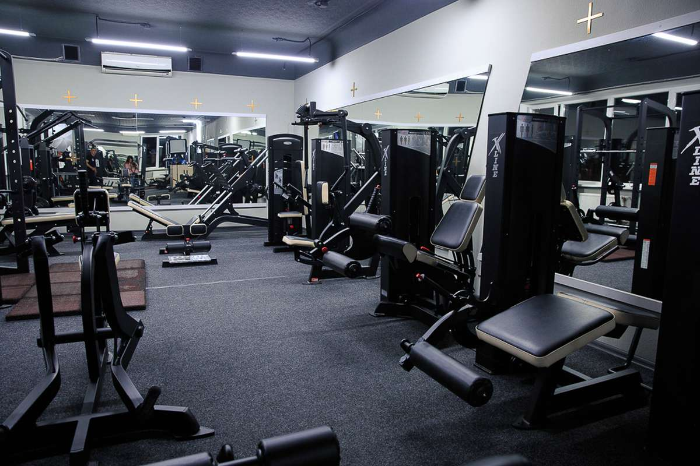
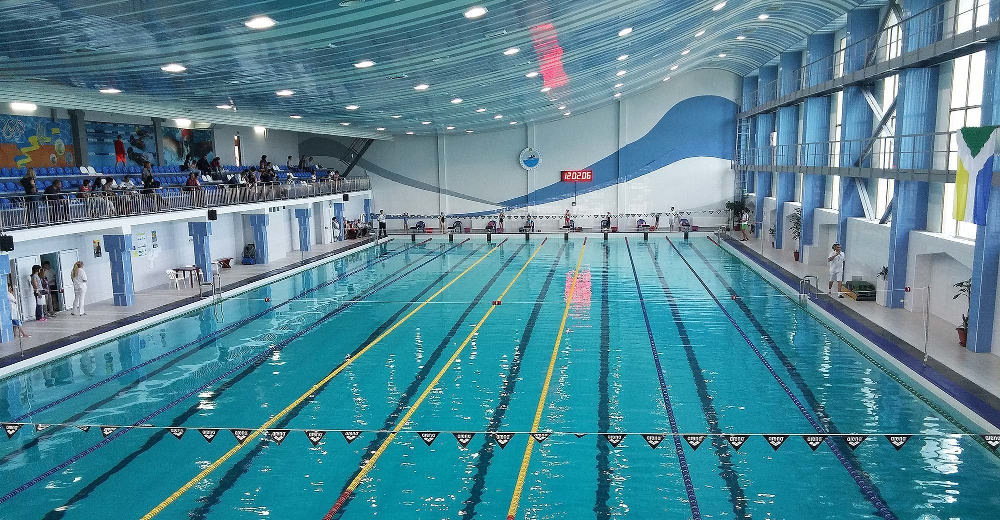

Спортивний клуб
Спортивний клуб — це заклад фізичної культури і спорту, який об'єднує спортсменів або любителів для тренувань, розвитку певних видів спорту та участі у змаганнях.
Напрямки клубу
клуб об'єднує кілька секцій за видами спорту — від індивідуальних дисциплін до командних ігор, кожна зі своїм тренером і розкладом занять.
Як обрати секцію?
обирати секцію варто за віком і фізичною підготовкою учасника, а також метою занять — оздоровчі тренування чи підготовка до змагань.
Спортсмени клубу
кожен спортсмен клубу має власний розряд, якого досягає під час змагань, а результати виступів фіксуються в особистій картці.
Розряди та досягнення
розряди присвоюють за результатами офіційних змагань — від третього до першого, а найкращі спортсмени отримують статус рекордсмена клубу.
Напрямки спорту в клубі:
- Плавання
- Єдиноборства
- Теніс
- Баскетбол
Порядок вступу до клубу:
- Подати заявку та пройти медичний огляд
- Обрати секцію та тренера
- Відвідати перше пробне заняття
- Оформити членство та отримати розклад тренувань


Клуб
| Прізвище | Вид спорту | Дата народження | Результат | Розряд | Рекордсмен |
|---|---|---|---|---|---|
| Лета | Плавання | 02.05.2008 | 26.5 с | перший | так |
| Опришко | Баскетбол | 01.01.2008 | 24 очки | третій | ні |
| Мессі | Теніс | 02.02.1988 | 6:3,6:4 | другий | ні |
| Роналду | Єдиноборства | 07.07.2007 | перемога больовим | перший | так |
Записатись
Корисні посилання
Часті запитання
З якого віку можна записатись у клуб?
Більшість секцій приймають дітей від 6 років, деякі — з 10.
Чи потрібна медична довідка?
Так, довідка про стан здоров'я обов'язкова для всіх секцій.